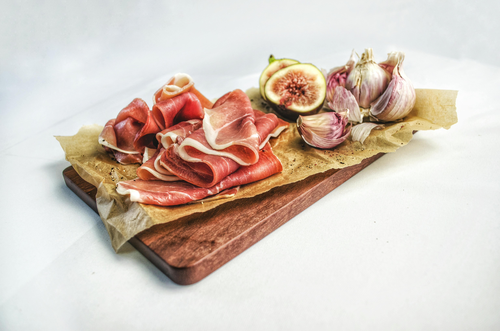

Reflective Design:
API Card
| Values | Design Implication | Specific Element |
|---|---|---|
| Empowerment |
Check the recipe at any time Annotation: This text emphasizes instant access to recipes, supporting user convenience and usability. Place it near a mobile-friendly feature (e.g., search bar or favorites) to reflect the “any time” aspect. Ensure legibility and visibility, possibly using a clock or bookmark icon to reinforce the idea. |
Annotation: When users open the webpage, they will be greeted with a personalized welcome message to enhance user engagement and create a friendly atmosphere. Annotation: The system will record the number of consecutive check-in days, allowing users to track their consistency and encouraging daily use. |
| Well-being |
Annotation: This value highlights health and variety in eating habits. Use vibrant imagery of diverse meals or a colorful food pyramid. Consider placing it near meal recommendations or nutrient info to reinforce the message. Annotation: Focus on environmental responsibility. Use green tones, recycling icons, or minimalistic visuals. Position this near features like “leftover recipes” or “smart shopping lists” to directly tie the value to user actions. |
Annotation: The webpage will include a notebook feature where users can log their meals daily, helping them stay mindful of their dietary habits. |
| Inspiration |
Annotation: Emphasizes enjoyment and lifestyle enhancement. Use imagery of happy moments around food—like people smiling while eating or beautifully presented dishes. This can be tied to personalized recommendations or a “Today's Featured Dish” section. Annotation: Highlights community and self-expression. Include user-generated content (like photo uploads or reviews), badges for completed recipes, or a “Share Your Dish” button. Use warm tones and expressive visuals to evoke pride and joy. |
Generate a weekly report every week to report changes in diet
People can make their own recipes and record videos, and then submit them to the community for everyone to rate Annotation: This feature encourages user-generated content by allowing people to contribute their own recipes and cooking videos, promoting engagement and creativity. Submitting to the community and enabling ratings introduces a social interaction layer, fostering a sense of recognition and participation. |
| Belonging |
Annotation: Focus on belonging and social connection. Include community features like forums, comment sections, or recipe swap spaces. Use interface elements such as profile pictures, likes, and replies to foster interaction and a sense of togetherness. Annotation: Emphasizes empathy and personalization. Provide tips based on user preferences (e.g., dietary restrictions), onboarding guidance, and friendly tone in microcopy. Consider adding a chatbot or FAQ to offer help quickly and make users feel heard. |
Community & Adding friends Annotation: Setting up or joining a community (e.g., themed cooking groups). Adding friends to share recipes, progress, or meal plans — promoting a sense of belonging and motivation through social interaction. |
- Website Identity: Your website will convey a modern, simple and warm identity, focusing on a user-friendly and convenient cooking experience. Whether it's a busy student, a novice cook, or a mother with special needs for her family, it can all be easily picked up.
- Emotional tone: The website will convey a warm, friendly and reliable feeling, with the aim of making users feel cared for and helped, and encouraging them to enjoy the cooking process rather than just going through the work.
-
- 
-
This image conveys a sense of "freshness" and "health", which is in line with our goal of providing users with beneficial and nutritious dishes.
-
- Original text:
- Revised text:
- Every family member who takes care of children can find healthy recipes suitable for their children here.
- Annotation:
Mothers can find healthy recipes suitable for their children here.
The original text implies the gender role assumption (only "mom" is responsible for cooking). The revised language is more inclusive and suitable for different roles such as fathers, grandparents, and elder siblings, avoiding gender stereotypes.
-
- Original text:
- Revised text:
- Click here to filter the recipes you want, such as those that take less time and are easy to make.
- Annotation:
This function can be used to filter and sort the recipe results to obtain the required content more efficiently.
The rewritten text is more colloquial and direct, making it easier for users to understand and operate. It is particularly suitable for users like Jake who hope to quickly find simple recipes.
Problems:
- The Issue Identified:
- Form control has more than one
- Identify the Relevant WCAG Success Criteria:
- WCAG 2.1A 1.1.1 Non-text content and WCAG 2.4.6 Titles or Tags
- Which Element on Your Page is Affected:
- Form controls, especially input boxes, buttons, checkboxes, radio boxes, etc
- What the Impact is on Potential Users:
- Form controls without clear distinction or identification will make it impossible for visually impaired users to accurately distinguish the controls through screen readers, thereby affecting their form-filling experience. For instance, if two buttons or input boxes use the same label or have no label at all, users may not be able to understand what functions they represent respectively, eventually leading to incorrect input or operation. For users with low vision, the confusion of the form will increase the difficulty of their operation.
- Solution(By GenAI):
- The Issue Identified:
- Check the keyboard focus indicator is visible when using CSS declaration for 'border' or 'outline'
- Identify the Relevant WCAG Success Criteria:
- WCAG 2.1 Success Criterion 2.4.7 Focus Visible
- Which Element on Your Page is Affected:
- Form elements (such as input boxes, buttons), links, clickable areas, etc
- What the Impact is on Potential Users:
- For users who rely on the keyboard for navigation (such as those with visual impairments, motor impairments, or those who do not use the mouse at all), the keyboard focus indicator is of crucial importance. If the focus indicator is not visible, users will not be able to know which element is gaining focus, and thus cannot interact effectively with the page. This may lead to their misoperation, inability to submit forms or loss of interaction ability with the page, significantly reducing the user experience.
- Solution(By GenAI):
- The Issue Identified:
- Label text is located after its associated text input or select element/li>
- Identify the Relevant WCAG Success Criteria:
- WCAG 2.1 Success Criterion 1.3.1 Info and Relationships
- WCAG 2.1 Success Criterion 4.1.2 Name, Role, Value
- Which Element on Your Page is Affected:
- Form controls (such as input, select, textarea, etc.) and the associated label elements
- What the Impact is on Potential Users:
- Users who rely on assistive technologies, especially those who use screen readers, cannot obtain clear prompts and cannot accurately understand the functions of form controls. If the label is located after the control, the screen reader may read the content of the form control first and then the label text. This will confuse users and affect the form-filling experience. In addition, visual users may also feel that the tag positions are unnatural, which affects the smoothness of user interaction.
- Solution(By GenAI):